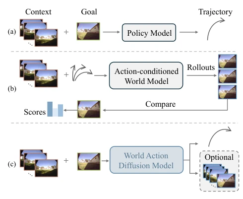
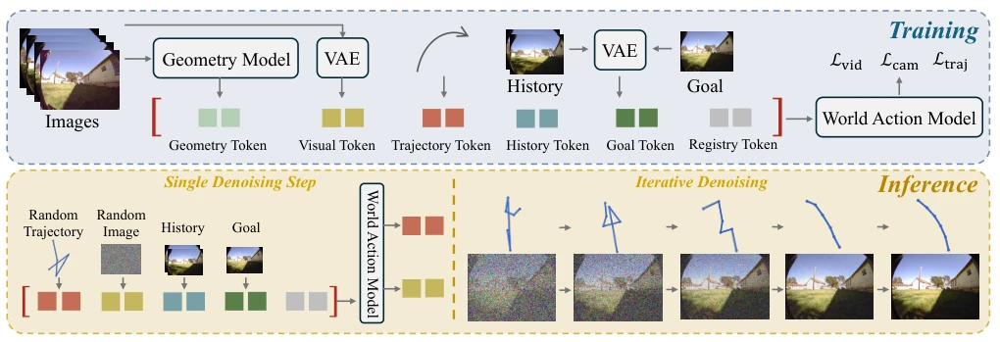
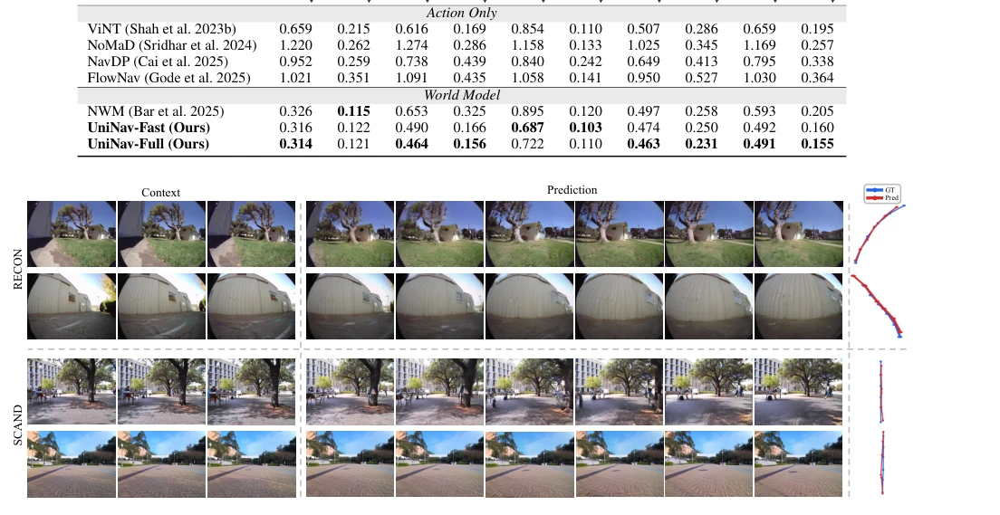
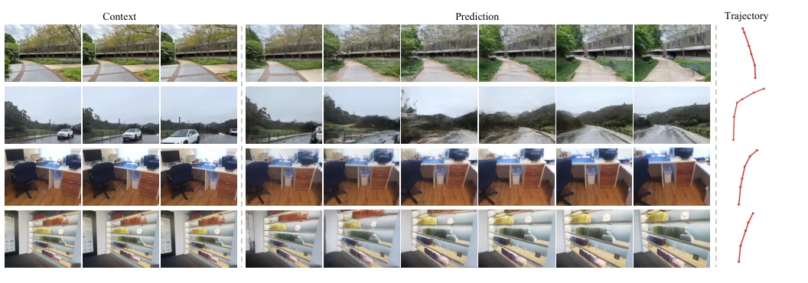

UniNav 试图用“既要又要”的 Diffusion 模型解决具身导航的痛点，这招在理论上很性感：既想要可解释的视觉 foresight，又想要实时的动作规划。作者把视频生成模型和导航策略强行缝合，还加了个几何监督的“外挂”，确实让模型在 ATE 指标上全面碾压了纯策略模型（如 ViNT）和传统的 World Model（如 NWM）。不过，这模型有点“贪心”，UniNav-Full 虽然能画图，但推理慢得像在等咖啡；UniNav-Fast 虽然快，但为了速度把“画图”功能砍了，这算不算一种“为了快而放弃思考”的妥协？另外，论文吹嘘能利用无标注视频数据，但消融实验显示，如果没有几何监督，这些视频数据反而成了噪音，这说明“多食”不如“精食”，所谓的泛化能力可能没宣传的那么神奇。总之，这是一个在架构上很聪明，但在工程落地和理论解释上仍有“缝合怪”嫌疑的尝试。
UniNav attempts to solve the pain points of embodied navigation using a Diffusion model that "wants it both ways"; this approach is theoretically sexy: wanting both interpretable visual foresight and real-time action planning. The authors forcibly stitch together video generation models and navigation policies, and add a geometric supervision "external plugin", indeed allowing the model to completely crush pure policy models (such as ViNT) and traditional World Models (such as NWM) on the ATE metric. However, this model is a bit "greedy"; UniNav-Full can draw pictures, but inference is as slow as waiting for coffee; UniNav-Fast is fast, but cuts the "drawing" function for speed, is this not a compromise of "giving up thinking for speed"? Additionally, the paper boasts about utilizing unlabeled video data, but ablation experiments show that without geometric supervision, these video data become noise instead, which shows that "eating more" is not as good as "eating precisely", and the so-called generalization ability may not be as magical as advertised. In short, this is an attempt that is very clever in architecture, but still suspected of being a "stitching monster" in engineering implementation and theoretical explanation.
研究动机Motivation
具身智能的核心挑战在于如何让机器人像人一样导航：不仅要知道“往哪走”（Waypoint），还要能“预见”走到那里会看到什么（Visual Foresight）。现有的导航策略模型（如 ViNT [Shah et al. 2023b], NoMaD [Sridhar et al. 2024]）虽然效率高，但只是盲目预测轨迹，缺乏对未来的视觉想象，导致决策缺乏可解释性，且难以处理未见过的环境。另一方面，基于 World Model 的方法（如 NWM [Bar et al. 2025]）虽然能生成未来视频进行规划，但需要为每个候选轨迹单独进行视频生成（Rollout），计算成本极高，难以满足实时闭环控制的需求。此外，现有的统一世界 - 动作模型（如 UniWM [Dong et al. 2025], WAM-Nav [Yang et al. 2026]）往往依赖自回归架构导致扩展性差，或者缺乏显式的几何约束，导致生成的轨迹在物理上不可行。UniNav 旨在解决这些矛盾：通过一个统一的扩散过程，同时生成视觉未来和动作轨迹，既保留视觉 foresight 的可解释性，又避免昂贵的试错规划，同时引入几何监督提升空间定位能力。
The core challenge of embodied intelligence lies in how to make robots navigate like humans: not only knowing "where to go" (Waypoint), but also being able to "foresee" what will be seen there (Visual Foresight). Existing navigation policy models (such as ViNT [Shah et al. 2023b], NoMaD [Sridhar et al. 2024]), although efficient, only blindly predict trajectories, lacking visual imagination of the future, leading to decisions lacking interpretability and difficulty handling unseen environments. On the other hand, World Model-based methods (such as NWM [Bar et al. 2025]), although able to generate future videos for planning, require video generation (Rollout) separately for each candidate trajectory, with extremely high computational cost, difficult to meet real-time closed-loop control needs. Additionally, existing unified World-Action models (such as UniWM [Dong et al. 2025], WAM-Nav [Yang et al. 2026]) often rely on autoregressive architectures leading to poor scalability, or lack explicit geometric constraints, leading to generated trajectories being physically infeasible. UniNav aims to resolve these contradictions: through a unified diffusion process, simultaneously generating visual futures and action trajectories, retaining the interpretability of visual foresight, avoiding expensive trial-and-error planning, while introducing geometric supervision to enhance spatial localization capabilities.

Figure 1: Comparison of visual navigation paradigms. (a) Policy-only methods directly map the observation history and goal image to a waypoint trajectory, without explicitly mod- eling future observations. (b) Action-conditioned navigation world models generate visual rollouts for candidate action sequences and select actions by comparing the imagined out- comes with the goal. (c) Our unified world-action diffusion model jointly predicts executable waypoint trajectories and their corresponding egocentric visual futures within a single architecture, while supporting efficient action-only inference when visual prediction is not required.
The core of UniNav is a unified World-Action diffusion framework built upon a pre-trained video diffusion model (Wan2.1-1.3B). Its overall Pipeline models the navigation task as a multimodal joint denoising process: inputting historical frames and Goal images, the model simultaneously outputs future visual latents, continuous waypoint trajectories, and geometry-aware camera parameters. On the data flow, all modalities are encoded as Token sequences, undergoing joint denoising through a shared Transformer. Innovations are mainly reflected in three aspects: 1. Geometry-Aware Token Representation: Besides conventional visual and trajectory Tokens, the model introduces camera geometry Tokens extracted by a frozen geometric foundation model (such as Depth Anything 3 [Lin et al. 2025]). These Tokens contain 3D scene structure information, serving as auxiliary supervision signals, forcing the model to comply with physical geometric constraints when predicting trajectories, solving the problem where pure visual models tend to "float". 2. Unified Flow-Matching Objective: The model adopts the Flow Matching framework, defining denoising losses simultaneously for video latents, trajectory flows, and camera geometry Tokens. This design couples visual prediction and action generation under the same optimization objective, rather than simple serial or parallel processing. 3. Hybrid Training and Dual Variant Architecture: During training, the model utilizes navigation data with trajectory annotations and action-less data with only video annotations simultaneously. For action-less data, only video and geometric losses are optimized, thereby utilizing massive video data to enhance geometric understanding. In the inference stage, two variants are provided: UniNav-Full retains all Tokens, generating interpretable future videos and trajectories; UniNav-Fast utilizes an Asymmetric Attention mechanism, removing future video Tokens during inference, predicting only trajectories, significantly reducing latency.

Figure 2: Overview of UniNav training and inference. During training, visual tokens from a pretrained VAE, camera- geometry tokens extracted by a frozen geometry model, trajectory tokens, history and goal tokens, and learnable register tokens are jointly processed by the world-action model. The model jointly denoises future-video, camera, and trajectory tokens using the corresponding objectives Lvid, Lcam, and Ltraj. At inference, noisy future-image and trajectory tokens are initialized from random noise and iteratively denoised, conditioned on the history and goal observations, to jointly produce future visual observations and waypoint trajectories.
实验Experiments
实验在 RECON, SaCSoN, GO Stanford, SCAND 四个真实世界导航基准上进行，并引入 ScanNet 等视频数据集进行混合训练。基线包括纯策略模型（ViNT, NoMaD, NavDP, FlowNav）和 World Model 基线（NWM）。主要指标为 ATE（绝对轨迹误差）和 RPE（相对位姿误差）。结果显示，UniNav 在所有数据集的 ATE 上均优于最强基线，例如在 SaCSoN 上降低了 24.7%。UniNav-Fast 在仅用一步推理时，延迟仅为 0.109 秒，且精度损失极小，证明了高效推理的可行性。消融实验揭示了两个关键发现：1. 几何监督至关重要：移除相机 Token 会导致性能下降，而使用“干净”的几何 Token（Oracle 设置）效果最好，但实际推理中必须依赖去噪后的几何 Token，这证明了引入几何监督能有效连接视觉动态与导航动作。2. 数据利用策略：单纯增加无标注视频数据若没有几何监督，反而会降低轨迹预测精度（ATE 上升 0.009）；只有开启几何去噪后，视频数据才能带来性能提升（ATE 下降 0.012）。这表明几何约束是模型从海量视频数据中“蒸馏”出导航能力的桥梁。
Experiments are conducted on four real-world navigation benchmarks: RECON, SaCSoN, GO Stanford, SCAND, and introduce video datasets such as ScanNet for mixed training. Baselines include pure policy models (ViNT, NoMaD, NavDP, FlowNav) and World Model baselines (NWM). Main metrics are ATE (Absolute Trajectory Error) and RPE (Relative Pose Error). Results show that UniNav outperforms the strongest baseline on ATE across all datasets, for example, reducing by 24.7% on SaCSoN. UniNav-Fast, when using only one-step inference, has a latency of only 0.109 seconds, with minimal accuracy loss, proving the feasibility of efficient inference. Ablation experiments reveal two key findings: 1. Geometric supervision is crucial: removing camera Tokens leads to performance degradation, while using "clean" geometric Tokens (Oracle setting) works best, but actual inference must rely on denoised geometric Tokens, proving that introducing geometric supervision effectively connects visual dynamics with navigation actions. 2. Data utilization strategy: simply increasing unlabeled video data without geometric supervision actually reduces trajectory prediction accuracy (ATE increases by 0.009); only after enabling geometric denoising can video data bring performance improvement (ATE decreases by 0.012). This indicates that geometric constraints are the bridge for the model to "distill" navigation capabilities from massive video data.

Figure 3: Qualitative joint prediction of future observations and waypoint trajectories. The predicted trajectories are shown alongside the corresponding ground truth.

Figure 4: Qualitative future-frame predictions on video-only datasets trained without waypoint annotations.